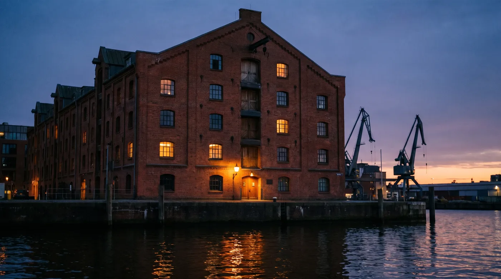
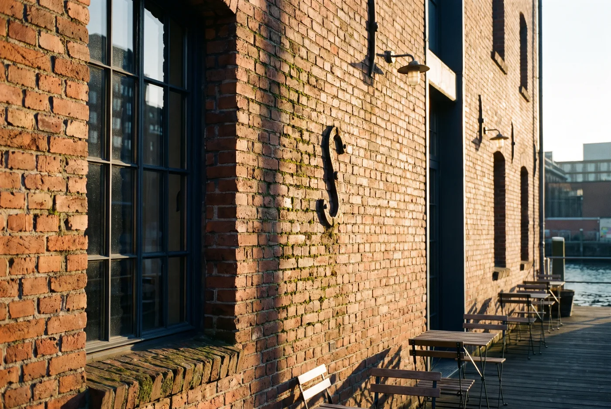
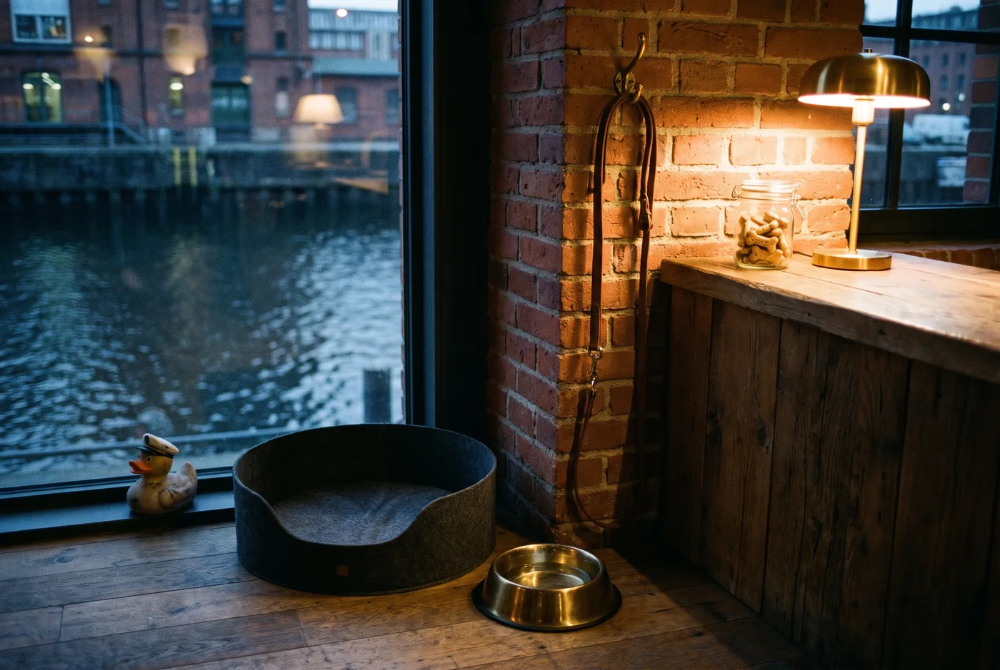
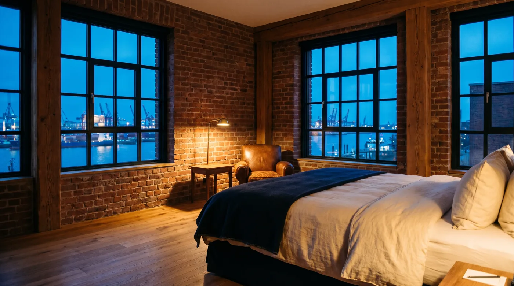
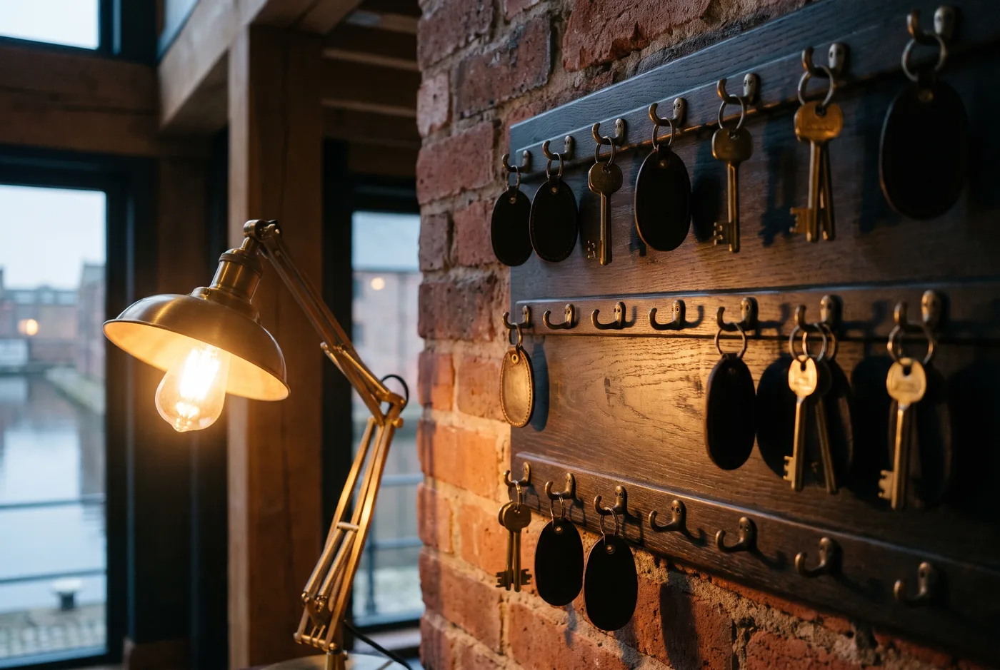
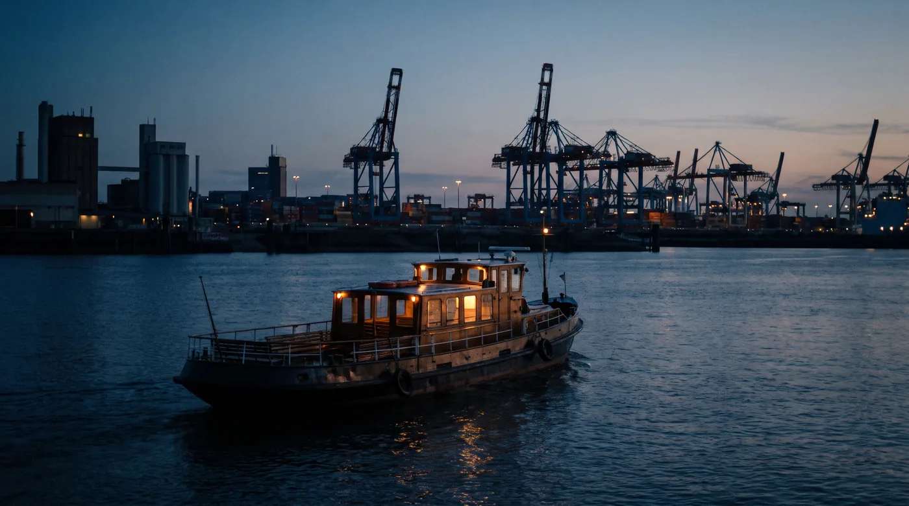
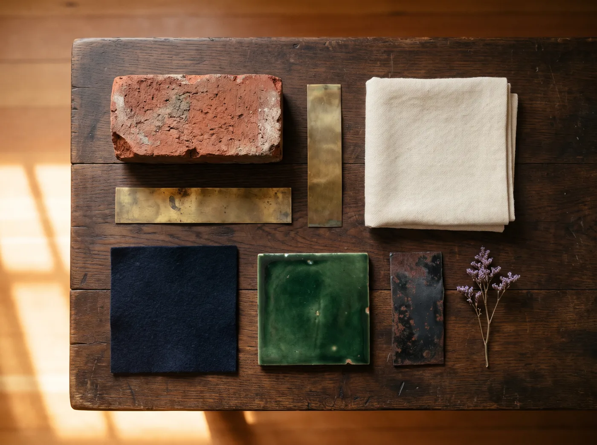
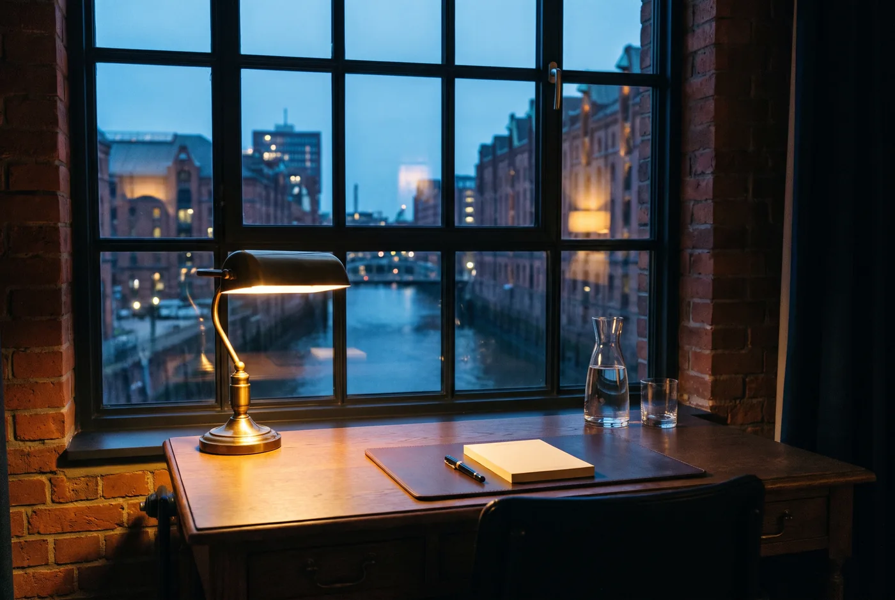

Das Haus in einem Satz
Zwölf Zimmer in einem Speicher von 1888 am Sandtorkai, eine Tafel von Donnerstag bis Samstag, eine Bar und das Wasser vor der Tür.
Sandtorkai 7, 20457 Hamburg · gebaut 1888, Hotel seit 2021 · 5 Böden, 12 Zimmer · +49 40 000 000 · willkommen@ihr-haus.de

Geschichte
- 1888Der Speicher wird für die Hamburger Kaffee- und Tabakhändler gebaut: fünf Böden, Backstein, Winden am Giebel, Ladeluken zum Wasser. Jahrzehntelang lagern hier Säcke und Ballen.
- 1962Die Sturmflut setzt den unteren Boden unter Wasser. Der Speicher wird saniert, der Hafen zieht nach und nach in die Containerterminals auf die andere Elbseite.
- 1994Der letzte Lagerbetrieb schliesst. Der Speicher steht leer, nur die Winden am Giebel bleiben.
- 2018Henrike und Jan Rademacher kaufen das Gebäude. Der Plan: ein kleines Hotel, in dem der Speicher sichtbar bleibt. Backstein, Balken, Eichendielen, Stahlfenster.
- 2021Eröffnung im Mai mit zwölf Zimmern, der Tafel und der Bar. Lotte zieht ein.
- 2024Der Dachboden wird ausgebaut: die Dachsuite und der Raum unter dem Dachstuhl für Feiern.

Die Firma und die Menschen
- Firma
- Ihr Haus am Hafen GmbH
- Sitz
- Sandtorkai 7, 20457 Hamburg
- Register
- Amtsgericht Hamburg, HRB 000 000
- USt-IdNr.
- DE 000 000 000
- Geschäftsführung
- Henrike Rademacher
- Gesellschafter
- Henrike und Jan Rademacher (je 50 %)
- Team
- 11 Menschen und ein Hund
Hotel, Gäste, Zahlen. Früher stellvertretende Direktorin eines Hauses an der Alster.
Architekt. Hat den Speicher drei Jahre lang umgebaut und kümmert sich um alles, was knarrt.
Kocht die Tafel und das Frühstück. Kauft morgens am Hafenmarkt. Zwei Köche, eine Lehrtochter.
Erste Ansprechperson am Tresen und am Telefon. Zwei Kolleginnen im Wechsel, sieben Tage die Woche.
Leitet Tafel und Bar. Zwei Servicekräfte, abends eine Aushilfe.
Zimmer, Wäsche, Frühstücksraum. Täglich bis 14 Uhr.
Lotte gehört zum Haus. Sie liegt meistens neben dem Empfang und begrüsst, wer durch die Tür kommt.

Die 12 Zimmer
Unter dem alten Balken, mit Backstein auf zwei Seiten und Dielen aus Eiche. Das Fenster geht auf den Kanal.
Nebensaison 159 € · Hauptsaison 199 €
- Bett 160 × 200 mit Leinenbettwäsche
- Bad mit Regendusche
- Schreibplatz am Fenster
- Ledersessel
- Wolldecke
- Lesebeleuchtung aus Messing
Das Bett steht so, dass der erste Blick am Morgen dem Wasser gilt. Am Fenster ein Schreibtisch aus Eiche.
Nebensaison 189 € · Hauptsaison 239 €
- Bett 180 × 200 mit Leinenbettwäsche
- Bad mit Regendusche
- Schreibtisch aus Eiche am Fenster
- Fensterbank mit Kissen
- Schrank mit Gläsern und Hafenbonbons
- Lesebeleuchtung aus Messing
Zwei hohe Fenster, davor die Kräne, und eine Wanne, von der aus man sie sieht.
Nebensaison 229 € · Hauptsaison 289 €
- Bett 180 × 200 mit Leinenbettwäsche
- Freistehende Wanne vor dem Fenster
- Bad mit Regendusche
- Sitzecke mit zwei Sesseln
- Schrank mit Gläsern und Hafenbonbons
- Eckzimmer mit zwei Fenstern
Ganz oben unter dem Dachstuhl von 1888, mit Oberlicht, freistehender Wanne und einem Bad in Flaschengrün.
Nebensaison 340 € · Hauptsaison 420 €
- Bett 200 × 200 mit Leinenbettwäsche
- Freistehende Wanne unter dem Oberlicht
- Bad in Flaschengrün mit Doppelwaschtisch
- Wohnbereich mit Sofa
- Schrank mit Gläsern und Hafenbonbons
- Frühstück aufs Zimmer auf Wunsch
Nebensaison November bis März, Hauptsaison April bis Oktober. Preise je Nacht für zwei Personen, Frühstück eingeschlossen. Einzelbelegung 30 € weniger. Hafengeburtstag, Weihnachten und Silvester auf Anfrage.

Die Tafel
Donnerstag bis Samstag ab 19 Uhr, Einlass 18.30 Uhr. 28 Plätze. 5 Gänge 89 €, Weinbegleitung 48 €.
Gekocht wird, was der Hafenmarkt am Morgen hatte, in fünf Gängen und von Hand angerichtet. Es gibt eine Karte für alle, die jede Woche wechselt, und immer eine vegetarische Fassung.
- Brot und ButterSauerteig aus dem Ofen, Butter mit Meersalz
- Nordseekrabbenauf Schwarzbrot, Crème fraîche, Gurke, Dill
- Zanderauf der Haut gebraten, junger Lauch, Beurre blanc
- Salzwiesenlammglasierte Möhren, Jus, wilde Kräuter
- Rote GrützeJohannisbeeren, Vanillecreme
- Brot und ButterSauerteig aus dem Ofen, Butter mit Meersalz
- Rote Betegeräuchert, Meerrettich, Dill
- Steckrübeglasiert, braune Butter, Haselnuss
- Pilzeaus dem Ofen, Graupen, Petersilie
- Rote GrützeJohannisbeeren, Vanillecreme
- Fisch
- Fischmarkt Altona, morgens um sechs
- Gemüse
- Hof in den Vierlanden, zweimal die Woche
- Lamm
- Salzwiesen an der Nordseeküste, Dithmarschen
- Brot
- eigener Sauerteig, gebacken im Haus
- Kaffee
- Rösterei in der Speicherstadt, zwei Strassen weiter
- Reservierung nötig, auch für Hausgäste
- Unverträglichkeiten bis zum Vortag melden, die Küche richtet sich danach
- Kinder ab zehn Jahren willkommen, kleinere nach Absprache
- Tischkarte: die Tafel zu zweit, zu viert oder als ganze Tafel für bis zu 28 Gäste

Frühstück und Bar
Frühstück 7.30 bis 10.30 Uhr, sonntags bis 12 Uhr.
Frühstück im Raum zum Wasser: Brot aus dem Ofen, Franzbrötchen, Eier wie gewünscht, Fisch vom Markt, Obst, Kaffee aus der Speicherstadt. Für Hausgäste eingeschlossen, aufs Zimmer gegen 12 €. Für Gäste von aussen 28 €.
Die Bar: täglich ab 17 Uhr, Donnerstag bis Samstag bis 1 Uhr, 18 Plätze.
Eine Theke aus Messing, Blick aufs Wasser, eine kurze Karte. Hausgäste bekommen auch nach Schluss noch ein Glas.
- Hafen SourKorn, Zitrone, Eiweiss, Kümmel13 €
- Speicher Old FashionedRum, Kaffee, Bitter14 €
- GrogRum, Zucker, heisses Wasser, Zitrone9 €
- AlsterwasserPils und Zitronenlimonade5 €
- Wein vom FassRiesling oder Spätburgunder, 0,15 l7 €
- Fritz Kola0,33 l4 €

Feiern
Hochzeiten, Geburtstage, Firmenessen. Henrike Rademacher plant mit Ihnen persönlich.
- Der Dachboden
- bis 24 Gäste an einer langen Tafel unter dem Dachstuhl, mit Blick über den Hafen
- Die Tafel exklusiv
- bis 28 Gäste, Donnerstag bis Samstag, das Menü der Woche oder ein eigenes
- Das ganze Haus
- zwölf Zimmer, Tafel, Bar und Dachboden für ein Wochenende

Hausregeln
- Anreise
- ab 15 Uhr. Frühere Ankunft nach Absprache, Gepäck nehmen wir jederzeit an.
- Abreise
- bis 11 Uhr. Später gegen 30 € bis 14 Uhr, wenn das Zimmer frei ist.
- Hunde
- willkommen, 20 € je Nacht, mit Decke, Napf und Handtuch. Nicht in der Tafel, in der Bar gern.
- Kinder
- willkommen. Kinderbett bis zwei Jahre kostenlos, Zustellbett bis zwölf Jahre 40 € mit Frühstück.
- Rauchen
- im ganzen Haus nicht, auf dem Anleger ja.
- Parken
- kein eigener Parkplatz. Parkhaus Speicherstadt, drei Minuten zu Fuss, 24 € je Tag; wir reservieren auf Wunsch.
- Räder
- zwei Hotelräder stehen kostenlos bereit, mit Schloss und Korb. Bitte am Empfang eintragen.
- Stornierung
- kostenlos bis sieben Tage vor Anreise, danach 80 % der ersten Nacht. Die Dachsuite bis 14 Tage vorher.
- Zahlung
- Karte, Überweisung vorab, bar. Die Rechnung kommt per Mail.
- Ruhe
- ab 22 Uhr in den Fluren. Die Bar liegt zum Wasser und ist in den Zimmern nicht zu hören.
- Barrierefreiheit
- Aufzug zu allen Böden. Ein Speicherzimmer auf dem 1. Boden ist stufenlos, mit breiter Tür und ebener Dusche.
- WLAN
- im ganzen Haus, ohne Passwort, ohne Anmeldung.

Anreise und Umgebung
- Mit der Bahn
- Vom Hauptbahnhof mit der U4 bis Überseequartier, dann ein paar Minuten am Wasser entlang. Vom Bahnhof sind es 15 Minuten.
- Mit dem Schiff
- Von den Landungsbrücken mit der Hafenfähre 72 bis zur Elbphilharmonie. Von dort sehen Sie das Haus schon.
- Mit dem Auto
- Navigation auf Sandtorkai 7. Vor der Tür halten zum Ausladen, danach ins Parkhaus Speicherstadt.
- Vom Flughafen
- S1 bis Hauptbahnhof, dann U4. Ein Taxi braucht 30 Minuten und kostet um 35 €.
- Mit dem Rad
- Vor dem Eingang stehen zwei Räder für Sie bereit. Die Speicherstadt beginnt hinter der nächsten Brücke.
- Speicherstadt
- 3 Minuten zu Fuss
- Elbphilharmonie
- 8 Minuten zu Fuss
- Landungsbrücken
- 15 Minuten zu Fuss
- Fischmarkt
- Sonntag ab 5 Uhr, mit der Fähre 15 Minuten
- Hauptbahnhof
- 15 Minuten mit der U4
- Flughafen
- 45 Minuten

Die Marke
IHR HAUS AM HAFEN · HAMBURG
Zeichen: Der Hafenkran als klare Linie (Robert 02.11.2026, Fassung 2 von acht gezeichneten Entwürfen). Die Kräne stehen in jedem Fenster des Hauses.
Ton: Ruhig, warm, nachts. Sätze sagen, was ist; kein Superlativ, kein Ausrufezeichen. Der Gast wird gesiezt.
Grundton: das Wasser nach Einbruch der Dunkelheit
helle Flächen: die Bettwäsche
nur als Linie und Knauf: die Fenster am Abend
Linien, kleine Schrift: Lampen und Schlüssel
sparsam: die Fassade
nur die Tafel: Fliesen und Wände des Gastraums
- Cormorant Garamond
- Wortmarke, Titel, Preise
- Instrument Sans
- Lesetext, Leiste, Knöpfe

Hinter dem Haus: die sieben Werkzeuge
Der Überblick: alle Werkzeuge, der Stand des Hauses, Besuche heute. Vom Giebel sieht man alles.
Texte, Preise, Zeiten und Fotos auf jeder Seite ändern, erst probieren, dann veröffentlichen. Im Kontor wurde geschrieben, was nach aussen ging.
Tafel, Frühstück, Bar und Wochenmenü als Karte und PDF, die Website liest mit. Im Lagerbuch stand jede Ware mit ihrem Preis.
Zimmer-, Tisch- und Feieranfragen aus der Website, Antwortbriefe im Ton des Hauses, das Wissen für den Chat. Die Winde holt herein, was vom Wasser kommt.
Bilder, Logo, Farben, Schriften, Markenbuch zum Herunterladen. In der Musterkammer lagen die Proben der Händler.
Briefpapier, Tischkarten, Kofferetiketten, Aushänge in der Gestaltung des Hauses.
Wer die Website öffnet, woher, wie lange, was zur Buchung führt. Jede Ankunft eingetragen.
Die Namen kommen aus der Speicherstadt und gehören nur diesem Haus. Jede Hausart bekommt ihren eigenen Satz aus ihrer Welt: ein Berghotel andere Wörter als ein Speicher, ein Landgasthof wieder andere.
